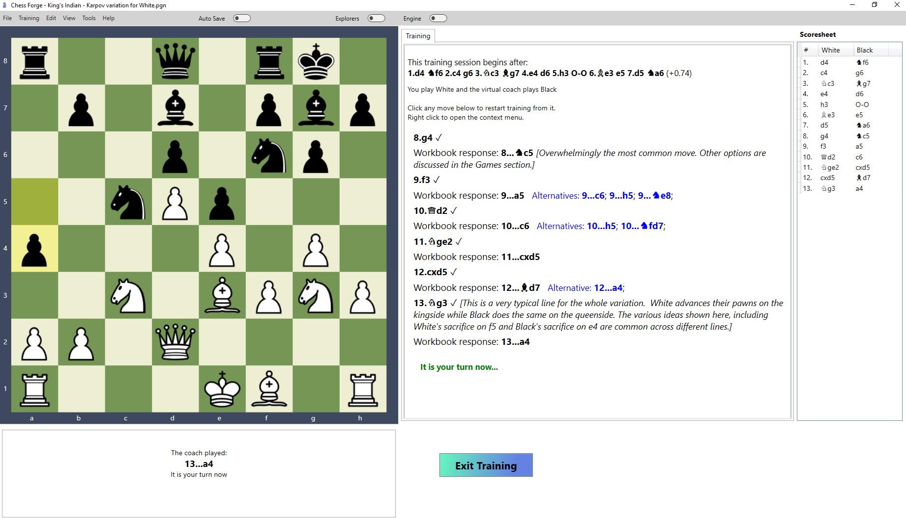

Here, we are presenting just a quick overview. Please refer to the Training section of the User's Guide for details.
Training Mode
Free Style Training
What do we mean by Free Style"? Well, a couple of things:
- You choose a variation you want to test yourself against and the position you want to start from.
- When you encounter a fork, the program will let you choose which branch to follow.
- You can go back to any move at any point.
- Once the workbook line finishes, the program starts a game with the engine.
- You can show or hide engine evaluations.
Again, we have to stress that we are not stating that this mode of training/testing is better than the more restrictive ones. In fact, we know that the spaced repetition approach can be very effective. We are simply presenting an alternative that you may find more suitable for you or at least more enjoyable.
